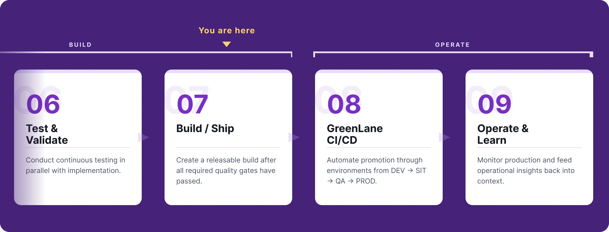

Approve a release

What are you reviewing?
You are reviewing the release candidate and everything that justifies releasing it. That means the build artefacts, the accepted test evidence, the quality and security results, and the deployment package, version and logs that Azure-Deploy produces. Azure-Deploy prepares deployment artefacts, validates configuration and executes an approved deployment to Azure, but it should only be used after the release candidate has passed the required quality, security and readiness checks.
Each approver answers a different question, so know which seat you are in.
- FDA: Ensure quality and security evidences are strong enough to proceed
- FDE: Ensure release candidate is complete, traceable and ready to ship
- PO: Ensure product suitability for real users